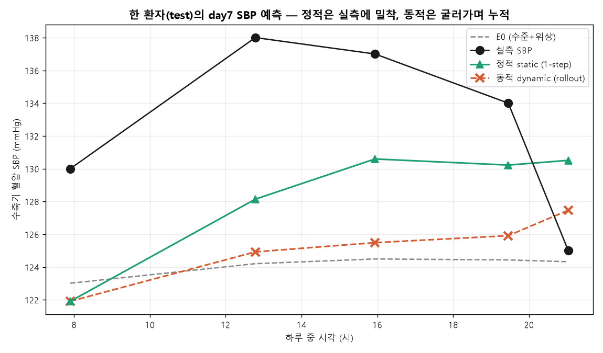
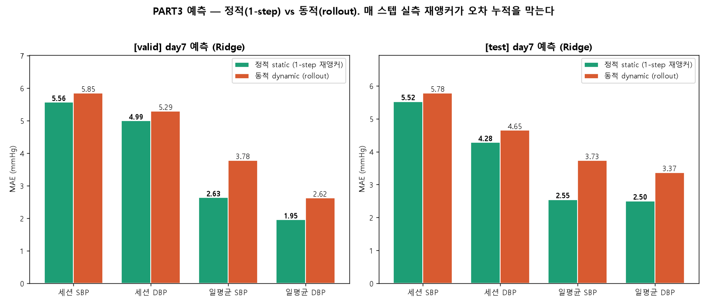

🔮 PART 3 · 혈압 예측 (Forecasting)
비워둔 7일째를 PART2 추정 모형으로 내다본다 — 정적(static, 1-step 재앵커)과 동적(dynamic, 예측 굴림). 그리고 세션을 Grade A로 올리려면 무엇이 필요한가
📑 챕터 바로가기
PART 3은 "예측(forecasting)"이다. PART2에서 만든 추정 모형(E0 = 수준 + 위상, 편차 = 워치 + 지난추정)을 자기회귀(AR)로 굴려 비워둔 7일째를 맞힌다. 두 방식 — 매 순간 실측을 보고 한 걸음만 내다보는 정적, 자기 예측을 믿고 하루를 통째로 굴리는 동적. 성과는 7일째 실측에서만 잰다(MAE + BHS).
추정(PART2)이 "지금 이 순간"을 맞혔다면, 예측(PART3)은 "다음"을 내다본다. 핵심은 자기회귀 — 지금의 혈압은 조금 전의 혈압(편차)에 이어진다. 모형은 r(t) = 실측(t) − E0(t)를 직전 편차·시간차·워치로 예측하고, 최종 BP(t) = E0(t) + r̂(t)를 만든다. "직전 편차"를 무엇으로 채우느냐가 정적·동적을 가른다.
🧒 쉽게. 징검다리를 건넌다고 하자. 정적이는 매번 지금 발 디딘 진짜 돌을 보고 바로 다음 한 칸만 뛴다 — 그래서 거의 안 틀린다. 동적이는 눈을 감고 "아까 내가 예측한 위치"만 믿고 끝까지 뛴다 — 처음 작은 오차가 점점 커진다. 그래서 정적이 ≫ 동적이.
- 정적(static) = 1-step ahead. 매 시각, 직전의 실측 편차로 재앵커해 바로 다음만 예측. 자주 측정해 계속 바로잡는 시나리오 — 가장 정확
- 동적(dynamic) = recursive rollout. 7일째 실측 없이, 자기 예측을 다음 입력으로 물려 하루를 통째로 굴림. 오차가 누적됨
측정 빈도가 예측 지평을 좌우한다. 정적은 측정으로 계속 리셋되어 짧은 지평(1-step)이고, 동적은 측정 없이 긴 지평(하루)을 한 번에 — 그래서 동적이 본질적으로 어렵다.

왼쪽 — 한 환자 7일째 SBP: 정적(초록)이 동적(주황)보다 실측에 더 가깝다. 단 모형은 추정값만 쓰므로(실측은 평가용·모형엔 미사용) 그날의 급변(실측 스파이크)은 다 못 잡는다. 오른쪽 — day7 세션 순서가 늦을수록(예측 지평↑) 동적은 오차 누적, 정적은 평탄. 정적이 "실측에 밀착"하는 게 아니라 "동적보다 덜 틀린다"는 뜻.
셀 = MAE + BHS등급. 7일째 실측, valid·test 각 24명.
| split · 모형 · 모드 | 세션 SBP | 세션 DBP | 일 SBP | 일 DBP |
|---|
| valid · Ridge · 정적 static | 5.56B | 4.99B | 2.63A | 1.95A |
| valid · Ridge · 동적 dynamic | 5.85B | 5.29B | 3.78A | 2.62A |
| valid · ExtraTrees · 정적 static | 5.43B | 5.02A | 2.74A | 2.11A |
| valid · ExtraTrees · 동적 dynamic | 5.81B | 5.32B | 3.83A | 2.76A |
| test · Ridge · 정적 static | 5.52B | 4.28A | 2.55A | 2.50A |
| test · Ridge · 동적 dynamic | 5.78C | 4.65B | 3.73A | 3.37A |
| test · ExtraTrees · 정적 static | 5.61B | 4.30A | 2.77A | 2.70A |
| test · ExtraTrees · 동적 dynamic | 5.76B | 4.64B | 3.94A | 3.53A |

정적(초록) vs 동적(주황) MAE. 정적이 모든 지표에서 낮다 — 매 스텝 실측 재앵커가 오차 누적을 막는다.
✅ 정적(1-step). test 세션 DBP 4.28 A, 일평균 SBP 2.55 A·DBP 2.50 A. 자주 측정해 재앵커하면 임상급.
🌀 동적(rollout)은 오차 누적. 예측을 물려 하루를 굴리니 test 세션 SBP 5.52 B → 5.78 C, 일평균도 2.5 → 3.4로 상승. 이게 recursive forecasting의 본질적 비용이다.
정적·동적 모두 세션 SBP는 B에 머문다. 선행연구를 보면 이건 모형의 한계가 아니라 데이터(센서)의 한계다 — 집계형 워치 변수는 사람의 평균(set-point)으로 회귀하므로, 분산이 작은 일평균은 A지만 순간 변동이 큰 세션은 B가 한계.
🔬 세션 A의 필수 조건(선행연구 합의). 집계 변수를 더 넣어도 세션 A는 못 간다. 필요한 것은 — ① raw PPG 파형 형태(수축·이완 peak, dicrotic notch, augmentation/reflection index, SDPTG 2차도함수), ② 타이밍 채널 PTT/PAT(PPG+ECG 또는 dual-PPG; PTT RMSE 5.3 vs PAT 9.8), ③ 주기적 재보정(≤월 1회; drift 0.022 mmHg/day). PPG2BP-Net은 raw 파형으로 SBP 0.21±7.51로 Grade A를 달성한다.
왜 일평균은 A, 세션은 B인가. 집계 변수는 자율신경 상태(set-point)를 인코딩한다. 일평균은 set-point가 거의 정답이라 A, 세션은 순간 swing을 못 잡아 B. 진단: 예측 vs 실측 세션 SBP에서 low 과대·high 과소면 mean-regression 확증.
선행연구 (DOI 클릭)
🏁 예측 최종. PART2 추정 모형을 AR로 굴려 7일째를 예측. 정적(1-step)은 세션 DBP·일평균 BHS A, 동적(rollout)은 오차 누적으로 한 등급 낮다. 측정 빈도가 예측 지평을 좌우한다.
세션 SBP B는 정직한 한계. 우리 집계형 파이프라인은 일평균 A까지 도달하나 세션 A는 raw PPG 파형·PTT·주기 재보정이라는 센서 조건을 요구한다 — 모형이 아니라 데이터의 문제. 이것이 다음 단계의 로드맵.
120명 · 사람 60:20:20 · day7 예측 · AR residual(E0 + 편차) · 정적(1-step)·동적(rollout) · valid·test 각 24명 · MAE+BHS · 세션·일평균
← PART 2 추정 · 논문 →